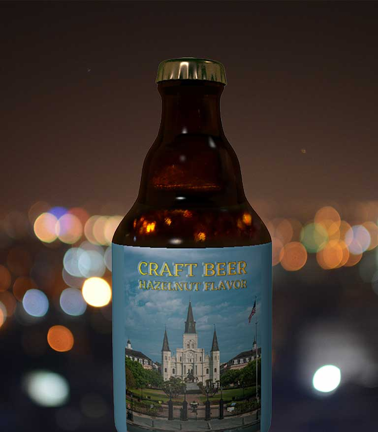

I'm Camila, a Capricorn sun, passionate about fine arts, and motion design. I'm a business manager who decided to change my life by jumping into the erratic design and front-end and back-end worlds, I am currently a second-year interactive media design student at Fanshawe College. Keep scrolling to discover my work, and I hope you enjoy it!
My work is based on the design developed with adobe products such as illustrator, photoshop, after effects, and premier pro. I discovered a new passion for 3D modeling so feel free to take a closer look at these projects.
These photos were taken with aperture mode on a DSLR camera.
These photos were taken with aperture mode on a DSLR camera.
These photos were taken with aperture mode on a DSLR camera.
Thanks for taking the time to scroll through my work. Hope you like it!
Camila Romero
Multimedia Designer